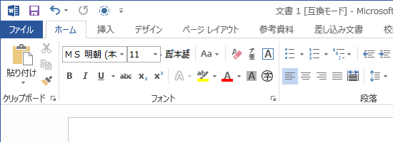
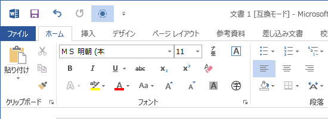
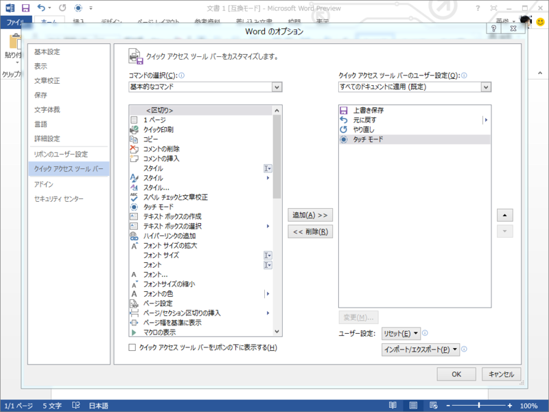
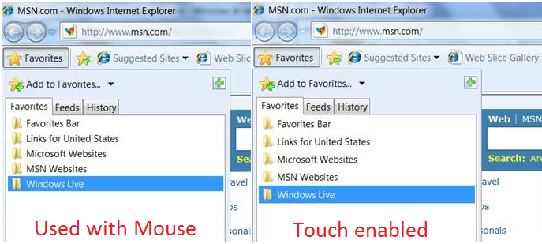

Office 15 のタッチモード
公開日：
Office 15 でちょっと気に入ったのが「タッチモード」。これを ON にすれば、コントロール類のサイズが大きくなるほか、マージンも若干広くなって、指でタップしやすくなる。

タッチモードを OFF （既定）。

タッチモードを ON。ドキュメントの表示エリアは若干狭まるが、誤タッチが減るメリットを考えれば甘受できる。あと、 Word 2013 の場合は閲覧モードがなかなか充実しているので、読むだけならそちらを使ったほうがよい。

ただ、標準ではクイックツールバーには現れないようで、 手動でボタンを追加する必要があった*1。これはちょっとわかりづらいし、このダイアログをタッチで操作するのかと思うとちょっと悲しい。ただ、製品版ではタッチ対応の有無を判定して自動でクイックツールバーへ登録、といった対応がなされるかもしれない。

実はこの手の機能は昔からあって、たとえば IE だとタッチ操作に対応したデバイスでは自動で「タッチモード」に相当するユーザーインターフェイスへ切り替わる（ Windows 7のIE 8にはタッチ機能 - ITmedia ニュース）。ただ、タッチファーストな Windows 8 とは言え、キーボード入力のプライオリティはそんなには下がらないわけで（Metro デスクトップはでっかいスタートメニュー。死んだのはスタートメニューではなくマウス。 - だるろぐ）、タッチ入力の場合とキー入力の場合で表示を切り替えられる方が便利だろう。できればコレが OS 標準の機能であってほしいのだけれど。
*1:手持ちの Sumsung Series 7 Slate の場合